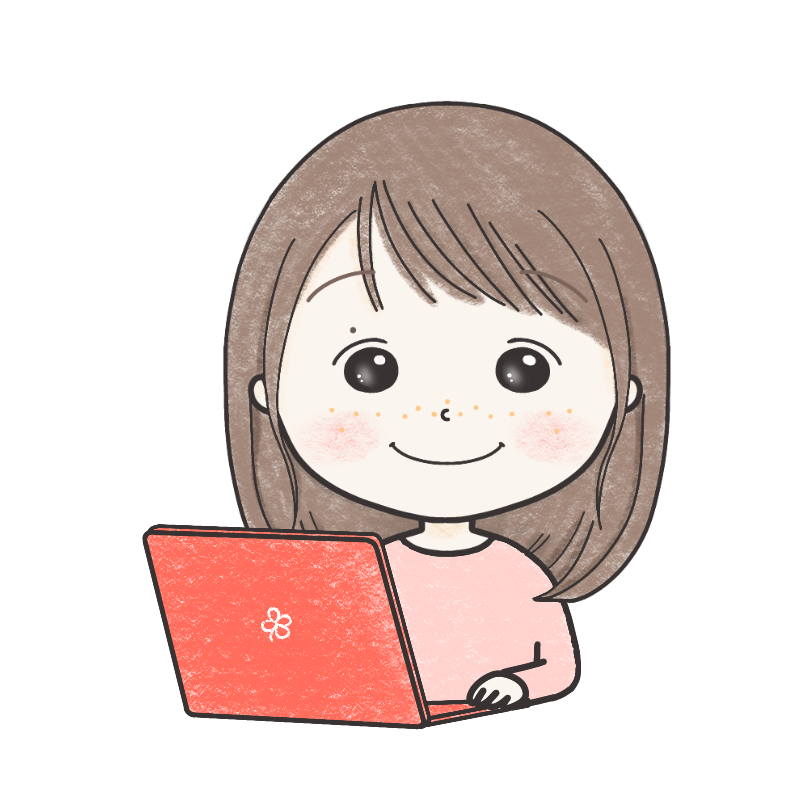

01
集客・発信
- 「発信したいけれど日々の仕事で後回しになる」
- 「発信しているのに仕事につながっている感じがしない」
- 「何を発信すればお客様に伝わるのか分からない」
つなぐスタジオ
あなたの想いが、届けたいお客様へまっすぐ届くように。

ゆりん
困っていることを一緒に整理し
今の仕事に合う形を考えます。
事業のお客様に満足していただくための
AI活用ももちろんですが
業務で実際に使う人が使いやすい形にすることも目指しています。
困りごとから探す
うまく言葉にできなくても大丈夫です。
気になるカテゴリーから具体的な困りごとや支援内容を確認できます。
01
02
03
実績と制作
クライアント様・自身の仕事・プライベートでもAIを活用し、引き出しを増やすチャレンジを続けています。
大切にしていること
専門用語に頼らず同じ目線で確認しながら進めます。
新しい負担をなるべく増やさず今の仕事の中で続けられる方法を試しながら育てます。
AIは賢くても理想に近づくためのひとつの道具です。
あなたの仕事とお客様に合う方法を一番知っているのはあなたです。
良かった点も違和感も遠慮なく伝えてください。
その声をもとに一緒に改善していきます。
ご相談から導入まで
お問い合わせから実際に使える形になるまで。
話して、試して、感想を聞きながら
日々の仕事になじむ仕組みへ整えていきます。
フォームから今困っていることや「こうなったらいいな」と思うことを送ってください。
まだ整理できていなくても大丈夫です。
個別にお話ししながら今の仕事の流れと変えたいことを一緒に整理します。
実際の仕事で使って確かめられるよう試作版をお渡しします。
使ってみて感じたことを聞きながらより使いやすく満足できる形へ改善します。
納得できる形になったら日々の仕事で使い続けられる仕組みとしてお渡しします。
相談する前に
はい。
うまくまとまっていなくても今どんな場面で止まっているかから一緒に整理します。
初回のご相談は完全無料です。
お話をうかがったうえで、必要であればそのあとの進め方や費用感をご案内します。
大丈夫です。
最終的にお渡しする形は1つではなく、話すだけで完結するものから、パソコン操作が必要なものまで様々です。
今の仕事で無理なく使えることを優先し、お一人ずつに合った設計を目指します。
集客・発信・事務・情報整理・お客様対応など繰り返し負担になっている仕事からお聞かせください。
相談内容を送ることは契約や導入を決めることではありません。
今の状況に合う次の一歩を考えるための入口です。
最初から大きく作り込まず、小さく試せる範囲から始めます。
合わないと感じた時点で立ち止まったり、方向を変えたりできます。
うまくいかなかった場合も、その原因を一緒に振り返り、次の進め方を考え直します。
無理に導入を続けることはありません。
ご心配は当然だと思います。新しいことを覚えるのは、それだけで負担になりますから。
だからこそ、専門用語を使わず、その方のペースに合わせて進めます。
わからないことは、その都度聞いていただいて構いません。
従業員の皆様向けにAIの勉強会を開くこともできますので、あわせてご相談ください。
次の一歩
話すことで課題が明確になり、次の一歩が開ける
そんな場所に使ってみてはいかがですか？
「AIで何ができるの？」「AIってなんかこわい」
その違和感を解くだけでも一歩先に進めます☺︎